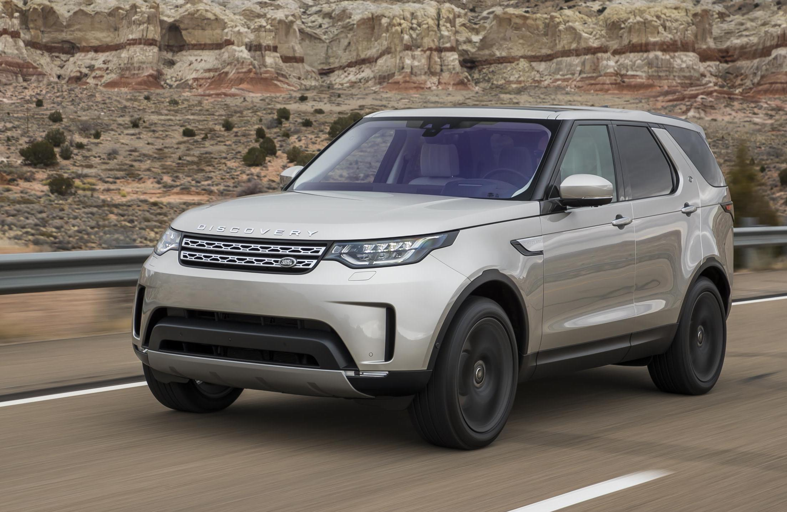

New Land Rover Discovery is out!
Main changes
-
Land Rover's three-row Discovery SUV cruises into 2021 with new powertrains, updated infotainment, and freshened styling.
While styling tweaks for the 2021 Land Rover Defender are fairly subtle, the brand's three-row family SUV receives more meaningful updates under the hood and inside the cabin. -
Gone are last year's diesel and supercharged V-6 engines; new engines include a turbo four and a turbocharged inline-six with a 48-volt hybrid system.
Last year's Discovery models were available with either a 254-hp turbo-diesel V-6 or a supercharged gasoline-powered 340-hp V-6 engine, but both have been tossed out in favor of a 296-hp turbocharged 2.0-liter four-cylinder and a turbocharged 3.0-liter inline-six. -
The Discovery inherits the new Pivi Pro infotainment system from the Defender and also gains a new midrange R-Dynamic trim level.
Inside, the Disco receives Land Rover's new Pivi Pro infotainment system on a new 11.4-inch touchscreen display. Launched in the reimagined 2020 Defender, Pivi Pro boasts a more simplistic menu layout, quicker-responses, and over-the-air update capability.
Prices
The 2021 Discovery is expected in U.S. dealerships by the end of 2020 with a starting price of $55,250 for
the base S model with the turbocharged four-cylinder engine.
Upgrading to the midrange R-Dynamic moves
the
starting price to $57,750; the R-Dynamic with the more powerful inline-six engine starts at $63,250, and the
top-spec HSE, which comes standard with the six-cylinder, costs $70,250.